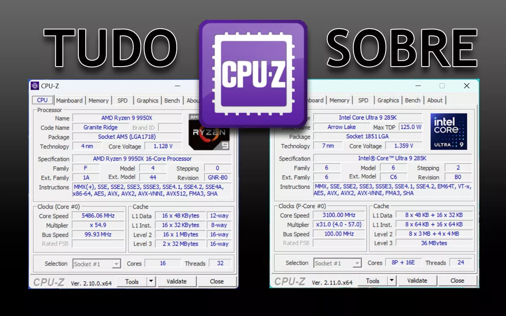
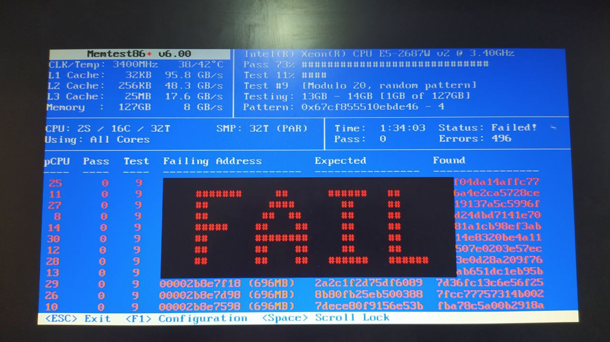
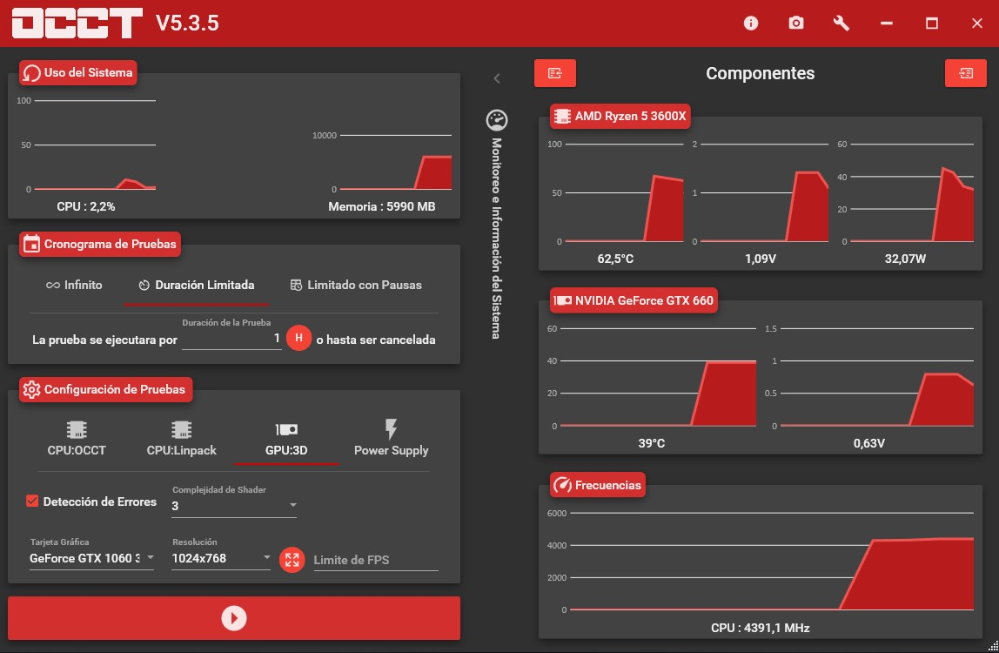
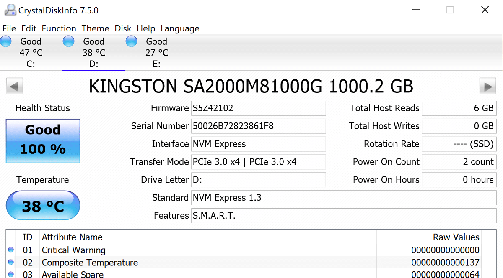
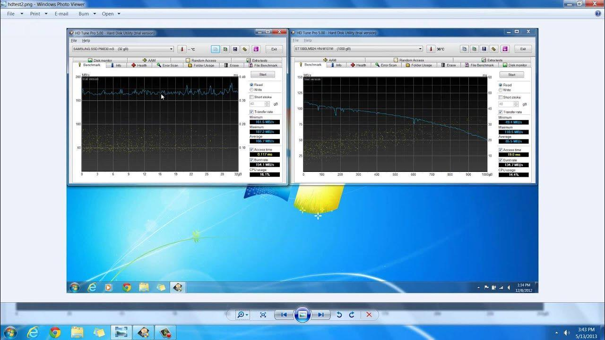
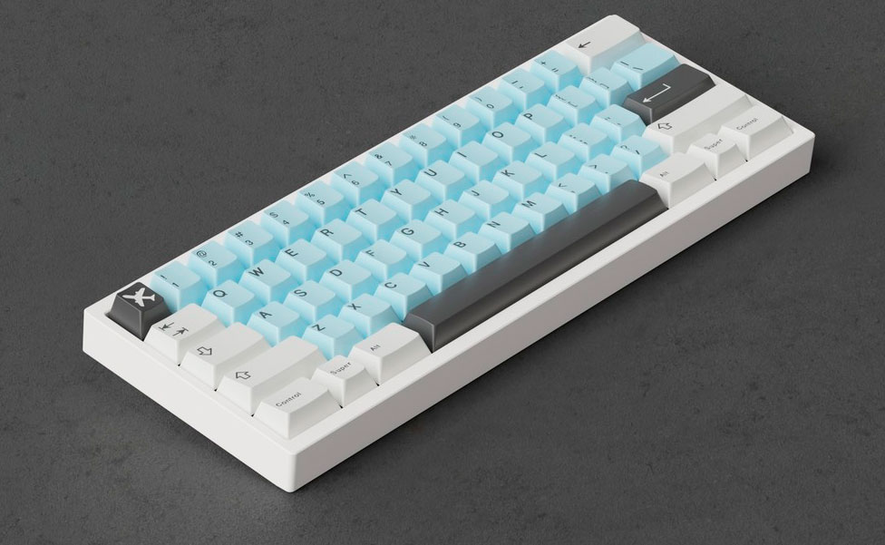

01. Herramientas de Acceso Remoto
Las herramientas de acceso remoto permiten conectarse a otro equipo
mediante internet para realizar tareas de soporte técnico,
administración de sistemas, mantenimiento preventivo y asistencia
a usuarios sin necesidad de estar físicamente presentes.
AnyDesk
AnyDesk es una de las soluciones de acceso remoto más utilizadas
gracias a su rapidez, bajo consumo de recursos y facilidad de uso.
Permite controlar equipos remotos de forma segura y eficiente.
- Conexión rápida y estable.
- Bajo consumo de recursos.
- Transferencia de archivos.
- Acceso remoto desatendido.
- Compatible con Windows, Linux y macOS.
Ventajas
- Configuración sencilla.
- Excelente rendimiento.
- Interfaz intuitiva.
TeamViewer
TeamViewer es una plataforma profesional de acceso remoto
utilizada ampliamente en empresas para soporte técnico,
administración de dispositivos y colaboración remota.
- Acceso remoto seguro.
- Transferencia de archivos.
- Soporte multiplataforma.
- Chat integrado.
- Control remoto de múltiples equipos.
Características destacadas
- Cifrado AES de 256 bits.
- Autenticación de doble factor.
- Gestión centralizada de dispositivos.
02. Comparativa y Nivel de Acceso
Tanto AnyDesk como TeamViewer ofrecen funcionalidades similares,
aunque cada herramienta está orientada a diferentes escenarios
de trabajo y necesidades empresariales.
| Herramienta |
Seguridad |
Facilidad |
Rendimiento |
| AnyDesk |
★★★★☆ |
★★★★★ |
★★★★★ |
| TeamViewer |
★★★★★ |
★★★★☆ |
★★★★☆ |
Comparación General
AnyDesk destaca por su velocidad y ligereza, siendo ideal para
soporte técnico rápido y conexiones remotas frecuentes.
Por otro lado, TeamViewer ofrece funciones empresariales avanzadas
como administración centralizada, reuniones virtuales y herramientas
de colaboración.
La elección dependerá de los requerimientos específicos del usuario.
Para tareas sencillas y rápidas suele preferirse AnyDesk, mientras que
TeamViewer es una excelente opción para entornos corporativos.
03. Diagnóstico RAM y Procesador



Estas herramientas permiten analizar el rendimiento del procesador,
verificar la memoria RAM y detectar posibles problemas de estabilidad
o fallos físicos en el hardware.
CPU-Z
CPU-Z proporciona información detallada del procesador,
memoria RAM, placa base y tarjeta gráfica instalada.
Es ampliamente utilizada para identificar componentes
y verificar especificaciones técnicas.
MemTest86
MemTest86 realiza pruebas exhaustivas sobre la memoria RAM para
detectar errores que puedan provocar bloqueos, reinicios inesperados
o pantallazos azules.
OCCT
OCCT permite realizar pruebas de estrés al procesador,
memoria RAM y tarjeta gráfica para comprobar la estabilidad
del sistema bajo cargas elevadas.
Beneficios del diagnóstico preventivo
- Detección temprana de errores.
- Prevención de fallos graves.
- Mayor estabilidad del sistema.
- Optimización del rendimiento.
- Incremento de la vida útil del hardware.
04. Diagnóstico de Almacenamiento


Las unidades de almacenamiento son fundamentales para el funcionamiento
del sistema operativo y la conservación de los datos. Un diagnóstico
periódico permite detectar problemas antes de que provoquen pérdida
de información o fallos graves en el equipo.
CrystalDiskInfo
CrystalDiskInfo es una herramienta especializada en el monitoreo del
estado de salud de discos duros HDD y unidades SSD. Utiliza la
tecnología SMART (Self-Monitoring, Analysis and Reporting Technology)
para mostrar información detallada sobre el estado del dispositivo.
- Temperatura del disco.
- Horas de funcionamiento.
- Estado general de salud.
- Alertas de posibles fallos.
- Información SMART detallada.
HD Tune
HD Tune permite evaluar el rendimiento del almacenamiento mediante
pruebas de velocidad, análisis de sectores defectuosos y monitoreo
de parámetros del disco.
- Benchmark de velocidad.
- Prueba de lectura y escritura.
- Detección de sectores dañados.
- Monitoreo de temperatura.
- Información técnica del dispositivo.
Importancia del diagnóstico de discos
Un disco con errores puede provocar lentitud, bloqueos del sistema,
corrupción de archivos y pérdida de información importante. Por esta
razón es recomendable realizar verificaciones periódicas para conocer
el estado real del almacenamiento.
05. Diagnóstico de Periféricos


Los periféricos permiten la interacción entre el usuario y el equipo.
Su correcto funcionamiento es esencial para garantizar una experiencia
de uso adecuada y mantener la productividad.
Diagnóstico del Teclado
El teclado debe evaluarse para verificar que todas las teclas respondan
correctamente y que no existan fallos de conexión o desgaste físico.
- Prueba individual de teclas.
- Verificación de respuesta.
- Comprobación de teclas especiales.
- Revisión de conectividad USB o inalámbrica.
Diagnóstico de Cámara Web
La cámara debe comprobarse para garantizar una imagen clara y el
funcionamiento adecuado de los controladores instalados.
- Verificación de imagen.
- Comprobación de resolución.
- Prueba de funcionamiento en videollamadas.
- Revisión de permisos del sistema.
Diagnóstico de Puertos USB
Los puertos USB permiten conectar dispositivos externos como memorias,
impresoras, teclados y discos externos.
- Detección de dispositivos.
- Pruebas de transferencia.
- Verificación de energía suministrada.
- Comprobación de controladores.
Beneficios de revisar los periféricos
- Evitar interrupciones en el trabajo.
- Detectar fallos físicos tempranos.
- Garantizar compatibilidad con el sistema.
- Mejorar la experiencia del usuario.
06. Conclusiones
El diagnóstico de hardware y software es una actividad fundamental
dentro del soporte técnico. Gracias a las herramientas analizadas es
posible detectar problemas de forma temprana, optimizar el rendimiento
y prolongar la vida útil de los equipos informáticos.
Las aplicaciones de acceso remoto facilitan la asistencia técnica a
distancia, mientras que las herramientas de diagnóstico permiten
identificar errores en memoria RAM, procesadores, discos y periféricos.
Principales aprendizajes
- Uso de herramientas de acceso remoto.
- Comparación de plataformas de soporte.
- Diagnóstico de procesadores y memoria RAM.
- Evaluación del estado de discos HDD y SSD.
- Pruebas de periféricos y dispositivos externos.
Recomendaciones Finales
- Realizar mantenimiento preventivo periódicamente.
- Mantener actualizado el sistema operativo.
- Actualizar controladores de hardware.
- Monitorear temperaturas del equipo.
- Realizar copias de seguridad frecuentes.
- Utilizar software de diagnóstico confiable.
- Verificar regularmente la salud de los discos.
- Revisar el funcionamiento de los periféricos.